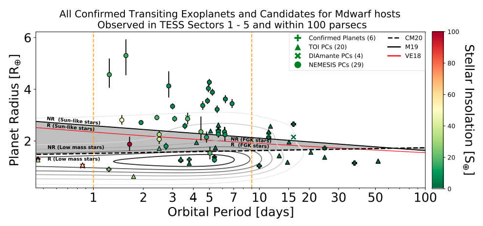
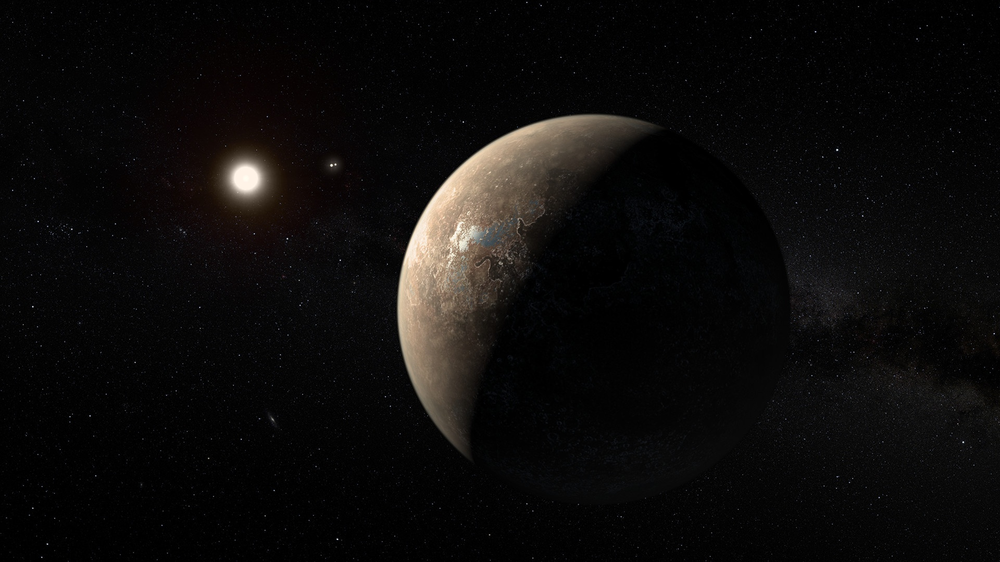

In recent years, interest in M-dwarf stars as hosts for planets has increased as the field of exoplanet discovery has grown. In this work, me and my collaborators have conducted a survey of over 33,000 stars within 100 parsecs of Earth that were observed by the Transiting Exoplanet Satellite Survey (TESS). In the two year TESS mission, the satellite surveys roughly 85% of the sky in two modes of observational cadence: once every 30 minutes and once every 2 minutes. Typically, only bright, isolated stars are pre-selected to be observed every 2 minutes by TESS which leaves a lot of M-dwarf stars, which are typically faint, observed with only 30 minute cadences. The lack of time resolution can make detection of planetary transits difficult but with our NEMESIS pipeline, we were able to detect 29 planet candidates, 24 of which are brand new detections! Transit surveys like ours can give an empirical validation of how many planets are missed by using the 30 minute cadence data.
You can find our work located at: Feliz et al. 2021. All of our data products are available at https://filtergraph.com/NEMESIS. This particular project will always hold a special place in my heart as not only is this my 1st first-authored TESS based paper, I also got to share co-authorship with three undergraduates (Samantha Bianco, Mary Jimenez and Bryan Villarreal Alvarado) who this is also their first paper as authors! Without their help, this project would not have been possible.

Period-radius diagram of all confirmed transiting exoplanets and exoplanet candidates observed in TESS sectors 1 – 5 from Figure 9 of Feliz et al. 2021.
Proxima Centauri has become the subject of intense study since the radial-velocity discovery by Anglada-Escudé et al. 2016 of a planet orbiting this nearby M-dwarf every ~ 11.2 days. If Proxima Centauri b transits its host star, independent confirmation of its existence is possible, and its mass and radius can be measured in units of the stellar host mass and radius. There have been numerous independent surveys and analyses of the Proxima system in search of transit events. Using a global network of small telescopes, we have obtained light curves of Proxima Centauri at 329 observation epochs from 2006 - 2017.
In Blank et al. (2018), we analyzed 96 of our light curves that overlapped with predicted transit ephemerides from previously published tentative transit detections, and found no evidence in our data that would corroborate claims of transits with a period of 11.186 d. In Feliz et al. (2019), we broaden our analysis, using 262 high-quality light curves from our data set to search for any periodic transit-like events over a range of periods from 1 - 30 days. Specifically at the 11.186 d period and 5 millimagnitude transit depth, we rule out transits in our data with high confidence with a transit injection analysis. We are able to rule out virtually all transits of other planets at periods shorter than 5 days and depths greater than 3 millimagnitudes; however, we cannot confidently rule out transits at the period of Proxima b due to incomplete orbital phase coverage and a lack of sensitivity to transits shallower than 4 millimagnitudes.

An artist’s impression of Proxima Centauri b. Credit: ESO.